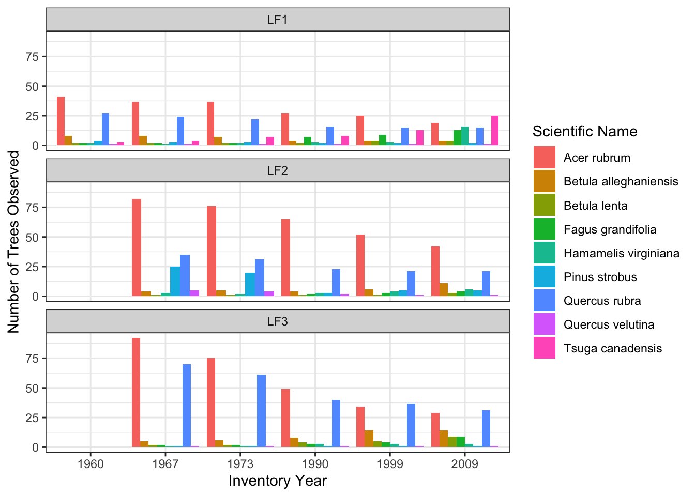
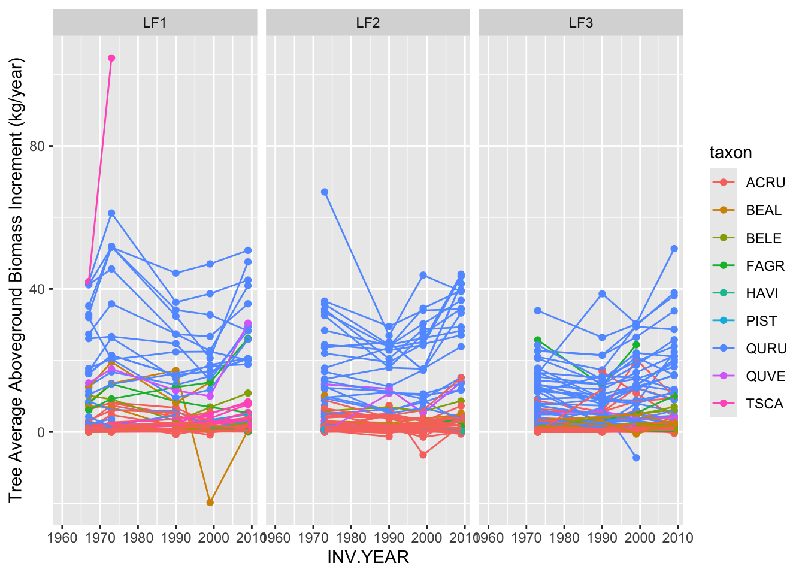
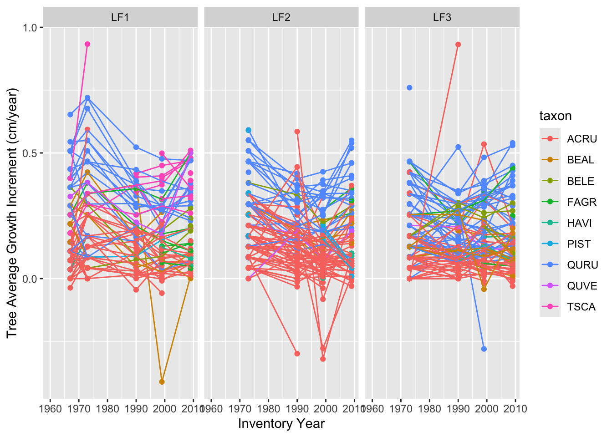
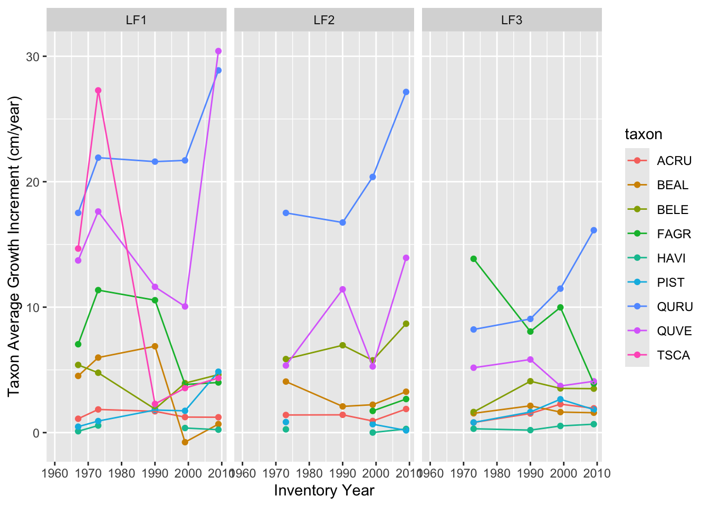
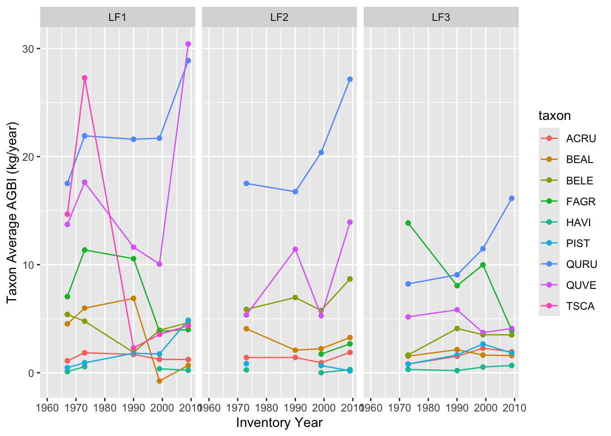

Biomass estimation from tree ring and forest census data
How do we get estimates of aboveground biomass and forest carbon from tree diameters and tree ring data?
Allometric equations define the relationship between commonly measured aspects of a tree (usually tree species, diameter, and/or height) and the weight of the tree (aboveground biomass, AGB). These equations are developed through a small set of destructive samples– this involves sampling tree size, height, and species, measuring tree mass, and developing a quantitative relationship between the commonly measured metric and tree mass.
In this module we will:
Apply species-specific allometric equations to the Harvard Forest Census dataset to estimate AGB at the time of census
Back-calculate tree diameter from the tree ring data at Harvard Forest
Apply allometric equations to the back-calculated tree diameters at Harvard Forest to estimate a timeseries of AGB.
1. Estimating Forest biomass for trees at the time of census
We will use the allometric equations in the allodb R package
This package is available on github, and we highlight some additional resources here:
Let’s explore allodb’s allometric objects and functions.
Objects include:
equations: an object that has the original allometric reference/citation, location of the data, the type of equation, information on units, and alot of additional information
references: an object that has citations, authors, etc, for the original reference data
sitespecies: an object that lists the sites, species, genus, family, and species_code information for some of the example data available with the allodb package
Here, we will focus on species from Harvard Forest, so lets see which species we have in our census data. This information is stored in the taxon column in the Census object:
Code
# lets visualize the number of trees sampled at Harvard Forest each census year:Census %>%group_by(taxon, `Scientific Name`, COMMON_NAME, INV.YEAR) %>%summarise(n.trees =n()) %>%group_by(taxon, `Scientific Name`, COMMON_NAME) %>%spread(INV.YEAR, n.trees, fill =0) %>%ungroup() %>%gt()
taxon
Scientific Name
COMMON_NAME
1960
1967
1973
1990
1999
2009
ACRU
Acer rubrum
red maple
41
211
188
141
111
90
BEAL
Betula alleghaniensis
yellow birch
8
17
18
16
24
29
BELE
Betula lenta
sweet birch
2
5
5
7
10
16
FAGR
Fagus grandifolia
American beech
2
4
4
12
16
26
HAVI
Hamamelis virginiana
American witchhazel
2
5
5
9
10
25
PIST
Pinus strobus
eastern white pine
4
29
24
6
8
8
QURU
Quercus rubra
northern red oak
27
129
114
79
73
67
QUVE
Quercus velutina
black oak
1
7
6
4
3
3
TSCA
Tsuga canadensis
eastern hemlock
3
4
7
8
13
25
Code
# we can also plot this up visually:ggplot(data = Census)+geom_bar(aes(x =as.character(INV.YEAR), fill =`Scientific Name`), position ="dodge")+theme_bw()+ylab("Number of Trees Observed")+xlab("Inventory Year")+facet_wrap(~site, ncol =1)

Based on this table and figure, which species do you think will have the largest aboveground biomass?
Lets use the get_biomass function from allodb to get estimates of biomass
This function requires the following arguments and provides and output of Aboveground biomass in kilograms (kg):
dbh: diameter at breast height (cm), numeric
genus: genus of the tree, character
species: the species name of the tree, character, can be NULL if only genus is known
coords: a vector (longitude, latitude) of the plot location, or a matrix with 2 columns if trees have individual locations
Code
require(allodb)# lets get the biomass for the first tree in the Census data (a 36.83 cm Northern Red Oak (Quercus rubra):Census.1<- Census[1,] # first treeCensus.1$AGB.1<-get_biomass(dbh = Census.1$dbh ,genus = Census.1$GENUS,species = Census.1$SPECIES,coords =c(Census.1$lon, Census.1$lat) )Census.1$AGB
[1] 979.5547
Now lets apply this function to the whole dataset
Code
ll <-matrix(c(Census$lon, Census$lat), nrow =length(Census$lon), ncol =2, byrow =FALSE, dimnames =NULL)# here we split up the census by sites Census.LF1 <- Census %>%filter(site %in%"LF1")LF1.ll <- HARV.ll %>%filter(site %in%"LF1")Census.LF2 <- Census %>%filter(site %in%"LF2")LF2.ll <- HARV.ll %>%filter(site %in%"LF2")Census.LF3 <- Census %>%filter(site %in%"LF3")LF3.ll <- HARV.ll %>%filter(site %in%"LF3")# get the biomass for each site:Census.LF1$AGB_kg <-get_biomass(dbh = Census.LF1$dbh ,genus = Census.LF1$GENUS,species = Census.LF1$SPECIES,coords =c(LF1.ll$lon, LF1.ll$lat))Census.LF2$AGB_kg <-get_biomass(dbh = Census.LF2$dbh ,genus = Census.LF2$GENUS,species = Census.LF2$SPECIES,coords =c(LF2.ll$lon, LF2.ll$lat))Census.LF3$AGB_kg <-get_biomass(dbh = Census.LF3$dbh ,genus = Census.LF3$GENUS,species = Census.LF3$SPECIES,coords =c(LF3.ll$lon, LF3.ll$lat))Census.AGB <-rbind(Census.LF1, Census.LF2, Census.LF3)ggplot(data = Census.AGB)+geom_point(aes(x = INV.YEAR, y = AGB_kg, group = ID, color =`Scientific Name`))+geom_line(aes(x = INV.YEAR, y = AGB_kg, group = ID, color =`Scientific Name`))+facet_wrap(~site)+theme_bw()+ylab("Tree Aboveground Biomass (kg)")+xlab("Year")
Lets get the total species trajectories of biomass over the census periods:
Which species are increasing the most over time? Is this what you expected based on the number of trees tallied? Here, we have added lines to visualize the trajectory of taxon AGB over time, but we don’t have estimates of variability in annual AGB increment over time.
Code
Census.AGB.sums <- Census.AGB %>%group_by(taxon, `Scientific Name`, site, INV.YEAR) %>%summarise(`Aboveground Biomass`=sum(AGB_kg, na.rm =TRUE))ggplot(data = Census.AGB.sums)+geom_point(aes(x = INV.YEAR, y =`Aboveground Biomass`, color =`Scientific Name`))+geom_line(aes(x = INV.YEAR, y =`Aboveground Biomass`, color =`Scientific Name`))+facet_wrap(~site)+theme_bw()+ylab("Taxon Aboveground Biomass (kg)")+xlab("Year")
What affects the trajectory of AGB over time?
Forest demographic processes affecting AGB:
Recruitment of new small trees into the plot
Mortality of trees (or conversely, survival)
Growth of existing trees in the plot
Census data provide an estimate of these processes over the remeasurement period.
Recruitment makes up a small amount of AGB at these plots:
Code
# Recruitmentrecruit.code.census <- Census.AGB %>%select(site, ID, taxon, AGB_kg, INV.YEAR) %>%group_by(site, ID, taxon) %>%spread( INV.YEAR, AGB_kg, fill =NA) %>% reshape2::melt(., id.vars =c("site", "ID", "taxon")) %>%arrange(ID, variable) %>%# if there was no measurement in the previous year for the tree, give a recruit code of 1mutate(recruit.code =ifelse(is.na(lag(value)), 1, 0)) %>%# if the current value is NA for the tree, set it to 0mutate(recruit.code =ifelse(is.na(value), 0, recruit.code)) %>%# set all recruit.code in the initial census to 0mutate(recruit.code =ifelse(site %in%"LF1"& variable ==1960, 0, ifelse(site %in%c("LF2", "LF3") & variable ==1967, 0, recruit.code))) %>%mutate(Recruitment =ifelse(recruit.code ==1, "New Recruit", "Existing Tree"))recruit.code.census %>%filter(ID %in%"LF1001")
site ID taxon variable value recruit.code Recruitment
1 LF1 LF1001 TSCA 1960 NA 0 Existing Tree
2 LF1 LF1001 TSCA 1967 NA 0 Existing Tree
3 LF1 LF1001 TSCA 1973 NA 0 Existing Tree
4 LF1 LF1001 TSCA 1990 19.36831 1 New Recruit
5 LF1 LF1001 TSCA 1999 45.02890 0 Existing Tree
6 LF1 LF1001 TSCA 2009 99.23069 0 Existing Tree
Code
ggplot(data = recruit.code.census) +geom_col(aes(x = variable, y = value, fill = Recruitment), stat ="identity")+facet_wrap(~site)+ylab("Aboveground Biomass (kg)")
Tree and taxon average annual growth and average annual aboveground biomass increment (AGBI) appear to vary across remeasurement periods:
Code
# GrowthAverage.Growth.census <- mortality.code.census %>%group_by(site, ID) %>%arrange(cal.year) %>%mutate(REMPER = cal.year -lag(cal.year),prevDBH =lag(dbh), prevAGB =lag(AGB_kg)) %>%# if the tree died in the remeasurement period, assume it died halfway through mutate(REMPER.mort.corrected =ifelse(mort.code ==1, REMPER/2, REMPER)) %>%ungroup() %>%mutate(tree.AGBI = (AGB_kg - prevAGB)/REMPER.mort.corrected, tree.growth = (dbh - prevDBH)/REMPER.mort.corrected) ggplot(data = Average.Growth.census) +geom_point(aes(x = INV.YEAR, y = tree.AGBI, color = taxon, group = ID))+geom_line(aes(x = INV.YEAR, y = tree.AGBI, color = taxon, group = ID))+facet_wrap(~site)+ylab("Tree Average Aboveground Biomass Increment (kg/year)")

Code
ggplot(data = Average.Growth.census) +geom_point(aes(x = INV.YEAR, y = tree.growth, color = taxon, group = ID))+geom_line(aes(x = INV.YEAR, y = tree.growth, color = taxon, group = ID))+facet_wrap(~site)+ylab("Tree Average Growth Increment (cm/year)")+xlab("Inventory Year")

Code
site.avgs <- Average.Growth.census %>%group_by(site, taxon, INV.YEAR)%>%summarise(taxon.AGBI.avg =mean(tree.AGBI, na.rm =TRUE), taxon.DI.avg =mean(tree.AGBI, na.rm =TRUE))ggplot(data = site.avgs) +geom_point(aes(x = INV.YEAR, y = taxon.DI.avg, color = taxon))+geom_line(aes(x = INV.YEAR, y = taxon.DI.avg, color = taxon))+facet_wrap(~site)+ylab("Taxon Average Growth Increment (cm/year)")+xlab("Inventory Year")

Code
ggplot(data = site.avgs) +geom_point(aes(x = INV.YEAR, y = taxon.AGBI.avg, color = taxon))+geom_line(aes(x = INV.YEAR, y = taxon.AGBI.avg, color = taxon))+facet_wrap(~site)+ylab("Taxon Average AGBI (kg/year)")+xlab("Inventory Year")

However, some remeasurement periods are quite long, and we miss inter-annual variation that could lead to differences in estimates of annual AGBI. Tree-ring data can help us fill in these gaps in our understanding of how AGB varies over time, since they are a direct measurement of annual growth.
Step 2: Use tree ring data to back-calculate tree diameter at Harvard Forest:
In order to use tree ring data to estimate tree AGB, we first need to convert measurements of annual tree growth into estimates of tree diameter. To do this with a single core, we assume that each tree grows symmetrically and in a circle.
Backcalculating tree diameter using dplR
Code
library(dplR)
Step 3: visualizing biomass over time (with no uncertainty)
Converting forest biomass to carbon using carbon fractions
The simplest way of estimating Carbon from tree-level biomass is to assume that the “carbon fraction,” that is the fraction of the tree’s weight that is made up of Carbon, is 50%, so multiplying your biomass value by 0.5 will give you a mass of Carbon per unit area.
Other carbon fractions are available, for example for live trees vs. dead trees, and for different forest types/species, but for simplicity we will use 0.5 here.